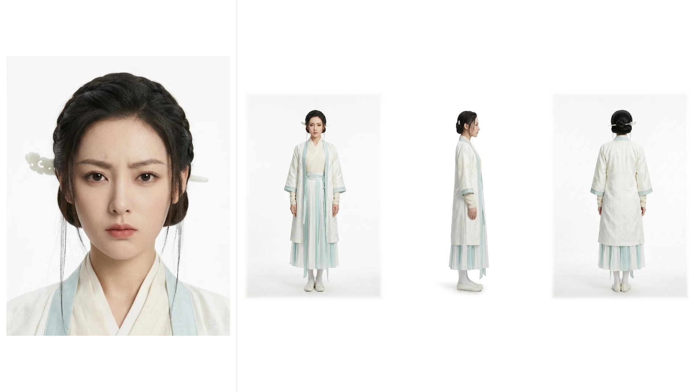
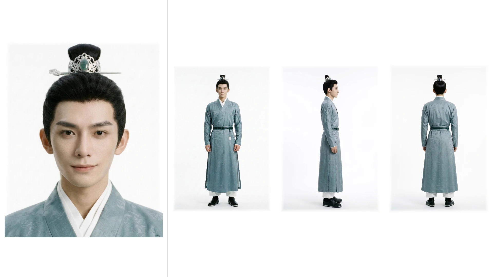

《晚棠风》v2 人物重构预览
35mm 电影胶片古装定妆照 · 男女主完整四视图（正脸 + 正面 / 90° 侧面 / 背面）
针对 v1 版人物质感偏素、缺乏现代爆款短剧精致度的问题，v2 改用「35mm 电影胶片古装定妆照」基准：保留真实皮肤微孔与胶片颗粒（拒绝塑料感 CGI），大幅拔高演员骨相颜值、微表情张力与真丝细麻/暗纹织锦剪裁。目前江晚棠与温如风的新版锚点已正式确认，并已基于各自新锚点派齐完整 90° 侧面与 180° 背面三视图及 1920×1080 设定板；v1 完整档案仍保持原样不动。
阶段 1 · ✓ 已完成
男女主锚点确认 + 完整四视图与设定板定稿
阶段 2 · 待选择下一步
核心配角（林慕白/绾音/厉狂澜）同规格升级 或 剧本重构
阶段 3 · 后续推进
全剧爆点梳理、分镜重出与片段重抽
江晚棠
女主 · 20 岁
外表奶凶眼神凌厉 · 内心柔软天真毫无城府
微表情与眼神
旧版：素颜偏憔悴、面部留白偏散
新版：高骨相鹅蛋脸，柳叶眉微蹙眼神锐利显奶凶，眼底清澈纯净无城府
妆造质感
旧版：无妆证件照感、气色略暗淡
新版：清透瓷肌 + 克制古装淡妆、浅玫瑰花瓣唇轻抿显倔强柔软反差
发型与发饰
旧版：颈后杂乱碎发 + 粗素木簪
新版：顺滑宋制编发低髻 + 镂雕白玉细簪 + 修颜两缕鬓发
服化剪裁
旧版：宽松洗旧麻布褙子显单薄
新版：月白丝麻长褙子配浅烟青滚边暗织海棠纹 + 双层百褶长裙
完整四视图定妆板（正脸 + 正面 / 90° 侧面 / 背面）
1920×1080 合成设定板 · 全部 4 个视图已通过检查门

江晚棠-sheet.png（face.v3 + front.v4 + side.v2 + back.v2）点击放大查看高清全图 ↗
正脸大头照v3 有效
点击放大
正面全身锚点v4 已确认
侧面 90°（朝右）v2 有效
背面 180°v2 有效
新旧版本对比（v1 vs v2）
上方按钮可切换「并排对比」或「滑动拉帘对比」
正脸大头照 · 旧版v1
正脸大头照 · 新版v3 奶凶微表情
点击放大
正面全身锚点 · 旧版v2
正面全身锚点 · 新版v4 已确认
点击放大
正脸大头照对比（旧 v1 / 新 v3）
← 向左滑动展示新版向右滑动展示旧版 →
正面全身锚点对比（旧 v2 / 新 v4）
← 向左滑动展示新版向右滑动展示旧版 →
温如风
男主 · 26 岁
面带笑意 · 内心坚韧城府极深
微表情与城府
旧版：五官偏温和路人感、轮廓不够锋利
新版：嘴角常含从容浅笑却笑意不达眼底，深邃丹凤眼透出坚韧与极深城府
去帽改冠
旧版：高大黑纱折上巾压低头身比且显老
新版：去掉乌纱帽，改挺拔高冠髻 + 镂空素银墨玉冠与银玉细簪
妆发与年代感
旧版：28 岁温和儒生感，缺古偶男主辨识度
新版：26 岁矜贵男主修容 + 两鬓长发全部利落收起，无垂落碎发，胶片颗粒肌理
服化剪裁
旧版：亮蓝色圆领直裰略显平庸
新版：宽肩收腰烟青暗云纹织锦交领长袍 + 墨玉银扣革带与白玉佩
完整四视图定妆板（正脸 + 正面 / 90° 侧面 / 背面）
1920×1080 合成设定板 · 全部 4 个视图已通过检查门

温如风-sheet.png（face.v4 + front.v4 + side.v2 + back.v3）点击放大查看高清全图 ↗
正脸大头照v4 有效
正面全身锚点v4 已确认
侧面 90°（朝右）v2 有效
背面 180°v3 有效
新旧版本对比（v1 vs v2）
上方按钮可切换「并排对比」或「滑动拉帘对比」
正脸大头照 · 旧版v1
正脸大头照 · 新版v4 笑面城府
点击放大
正面全身锚点 · 旧版v1
正面全身锚点 · 新版v4 已确认
点击放大
正脸大头照对比（旧 v1 / 新 v4）
← 向左滑动展示新版向右滑动展示旧版 →
正面全身锚点对比（旧 v1 / 新 v4）
← 向左滑动展示新版向右滑动展示旧版 →
资产校验与检查门摘要（共 8 个视图 · 0 过期 · 0 异常）
| 角色 |
视图 |
版本 |
原图尺寸 / 比例 |
5 项代码检查门 |
当前状态 |
| 江晚棠 |
正面全身（锚点） |
front-full.v4 |
848×1264 (2:3) |
✓ 全部通过（四边纯白 100%） |
✓ 已确认（Anchor Confirmed） |
| 江晚棠 |
正脸大头照 |
face-front.v3 |
896×1120 (4:5) |
✓ 全部通过（四边纯白 100%） |
✓ 有效（关联 front-full/v4） |
| 江晚棠 |
侧面 90°（面朝右） |
side-full.v2 |
848×1264 (2:3) |
✓ 全部通过（四边纯白 100%） |
✓ 有效（派生自 front-full/v4） |
| 江晚棠 |
背面 180° |
back-full.v2 |
848×1264 (2:3) |
✓ 全部通过（四边纯白 100%） |
✓ 有效（派生自 front-full/v4） |
| 温如风 |
正面全身（锚点） |
front-full.v4 |
848×1264 (2:3) |
✓ 全部通过（四边纯白 100%） |
✓ 已确认（Anchor Confirmed） |
| 温如风 |
正脸大头照 |
face-front.v4 |
896×1120 (4:5) |
✓ 全部通过（四边纯白 100%） |
✓ 有效（关联 front-full/v4） |
| 温如风 |
侧面 90°（面朝右） |
side-full.v2 |
848×1264 (2:3) |
✓ 全部通过（四边纯白 100%） |
✓ 有效（派生自 front-full/v4） |
| 温如风 |
背面 180° |
back-full.v3 |
848×1264 (2:3) |
✓ 全部通过（四边纯白 100%） |
✓ 有效（派生自 front-full/v4） |